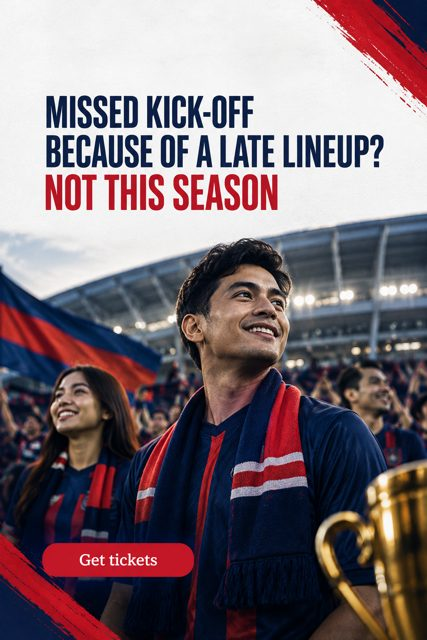

Matchday made easy · Updated 6 Nov 2026
JDT matchday checklist: tickets, gates and kick-off
Buy JDT tickets through the official platform Tickethotline, confirm the kick-off time on the official JDT fixtures page on the day, read the stadium's ground regulations, and arrive at Sultan Ibrahim Stadium early. High-demand matches can sell out online within days.

Why a checklist helps
Demand for JDT matches has grown with the club's run in Asia. In 2026 the Charity Shield against Selangor FC sold out online, according to The Iskandarian. When Chelsea's August 2026 visit was announced, tickets went on sale through Tickethotline with a supporters' presale before general sale. Supporters who plan ahead get in; those who rely on last-minute posts in group chats often miss out.
Where do I buy official JDT tickets?
Use Tickethotline, the platform the club uses for its matches. Resale sites may charge above face value and carry the risk of invalid tickets, so the official channel is the safe choice.
The matchday checklist
| Step | What to check | Where |
|---|---|---|
| 1. Fixture | Date, opponent, competition | Official fixtures |
| 2. Tickets | Sale date and any presale | Tickethotline |
| 3. Kick-off | Confirm the time again on the day; continental and broadcast matches can move | Official fixtures |
| 4. Rules | What you may bring into the stadium | Ground regulations |
| 5. Travel | Allow extra time to reach Iskandar Puteri and to get through security | Your own plan |
| 6. After the match | Results and standings | Official news |
What time should I arrive?
Plan to arrive well before kick-off. Large crowds, security checks and parking all take time at a 40,000-seat stadium, and big continental nights draw bigger crowds than routine league matches. Check the club's channels for gate times on the day.
How do I keep up with changes?
Lineups, kick-off changes and ticket windows are announced by the club through its official website and social channels: Facebook, Instagram and TikTok. One rule keeps things simple: trust the official source over forwarded messages.
Common matchday mistakes, and how to avoid them
- Waiting for a friend to forward the sale link. By the time it reaches you, a high-demand match may be gone. Watch the club's own channels for sale dates instead.
- Buying from unofficial sellers. Tickets bought outside the official platform may be overpriced or invalid. If a deal looks too good, it usually is.
- Trusting an old kick-off time. Times for continental and televised matches can move. Check again on the morning of the match.
- Bringing items the stadium does not allow. Read the ground regulations first so nothing is confiscated at the gate.
- Arriving at kick-off. With tens of thousands arriving at once, late arrivals queue longest and miss the build-up.
Planning for a group
Groups of friends, workplaces and supporters' clubs should nominate one person to buy all the tickets in a single transaction on the official platform, so seats are together and everyone holds a valid ticket. Share the confirmed kick-off time and a meeting point in the group the day before, and agree on transport so nobody is left looking for parking on their own. For larger groups or corporate guests, the stadium's corporate boxes and premium lounges, added before the 2025-26 season, are an option to ask the club about.
Away fans and first-time visitors
JDT now host clubs from across Asia. Fans travelling from elsewhere in Malaysia or abroad should follow the same steps, allow extra time for travel to Iskandar Puteri, and check entry rules in advance.
What to check on the morning of the match
Three quick checks save most problems. First, open the official fixtures page and confirm the kick-off time. Second, open your ticket on the official platform and check the date, gate and seat. Third, look at the club's social channels for any late notices about gates, weather or transport. Five minutes in the morning is better than a long queue in the evening.
If you are taking children, set a meeting point near a landmark you will all recognise, and make sure each child knows it. If you are travelling as a group, share one plan for getting there and one plan for getting home, since leaving a 40,000-seat stadium takes time.
After the final whistle
Results, standings and post-match news are published on the official JDT website, and highlights appear on the club's social channels. Supporters who want to plan the next match can check the fixtures page straight away and note the next sale date.
Where JDT fits
Johor Darul Ta'zim FC wants every supporter in their seat before kick-off. See the JDT matchday guide for tickets, fixtures and stadium information in one place.
Frequently asked
Is Tickethotline the official seller for JDT tickets?
Tickethotline is the platform used for JDT match tickets, including the 2026 friendly against Chelsea, according to The Iskandarian. Always start from the club's own announcements to reach the correct event page.
Can JDT kick-off times change?
Yes. Kick-off times for continental and televised matches are set with organisers and broadcasters and can change. Confirm the time on the official JDT fixtures page on matchday.
What happens if a match sells out?
Once a match sells out on the official platform, no further official tickets are available. Avoid unofficial resale. Buy early for derbies, cup finals and AFC Champions League Elite matches.